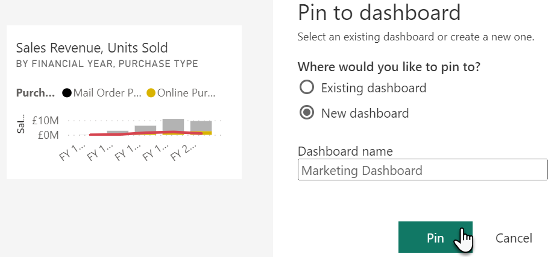
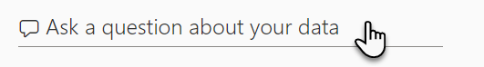
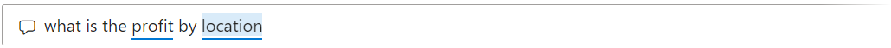

- We will allow you to pin 2-3 visualisations to your marketing dashboard, we will detail
the steps for the first visual and then allow you to select a couple more, on the report Pages pane, click on Product Revenue Breakdown

- Hover your mouse cursor over the visual on the right side of the page until you see a pin icon at
the top right, then click on the Pin visual
- Select New dashboard and name the dashboard “Marketing Dashboard” and
click Pin

- Select two more visuals to pin, note that if you click on a slicer on the page before you pin a
visual, you will get the applied filter on your dashboard, and remember to pin the visuals to your existing
dashboard this time which is the Marketing Dashboard
- Once you have pined your visuals, in the left navigation select My workspace
and click on the Marketing Dashboard
- Placing your mouse cursor over a tile in your dashboard will show a resize handle at the bottom
right of the tile, use this to resize your tiles, and click and drag a tile to move it (Note that if you
accidentally left click on a tile you will be navigated to our report, repeat the previous step in this exercise to
return to the dashboard again)

- Your dashboard is now ready, will now continue to show your colleagues how to create new
visualisations from your dataset without needing to rely on visuals in your report
Exercise 3 - Use Q&A to query your data source
The marketing team are impressed by the dashboard. One member has asked if you have an idea of what
you are after, is there a way of generating a new dashboard tile based on a premise? The answer you provide is yes, by
using the Q&A section at the top of the dashboard. To help them discover this rich feature, you show them the
following.
- With the Marketing Dashboard open, click into the section at the top left
named Ask a question about your data

- The options under the Try one of these to get started help you understand
how to combine general requests with the names of columns, click on any of the examples to
see how the sentence structure works

- A visual will be generated, look at the Q&A panel at the top to see the structure
of the query

- Select and clear the query to return to the previous selection of examples
- In the Ask a question about your data bar, enter “top 10 products by
sales revenue”
- Your visual should look like this:

- In the top menu, click on Pin visual then select the Marketing Dashboard and click Pin, then click Exit Q&A at the top left of the page, the new visual is at the bottom of the dashboard,
reposition/resize if desired
Exercise 4 - Share a dashboard with marketing
As your demonstration to the marketing team comes to a close, the question about sharing these
dashboards has been raised. You will show the team how to share their dashboards with their colleagues by following
these steps.
- In your my workspace, navigate to the Marketing Dashboard and in the
ribbon click Share
- Enter Steve Smith into the Grant access to
field
- To allow others to build further visualisations based on the data source you will allow the
following:

- Once ready, click Grant access
- The marketing team leave the meeting, engaged and excited about dashboards, it is important to
understand that reports are the more formal side of Power BI whereas dashboards are more aligned to self-service
which can benefit those who need further information more immediately or wish to play around with the data in the
model